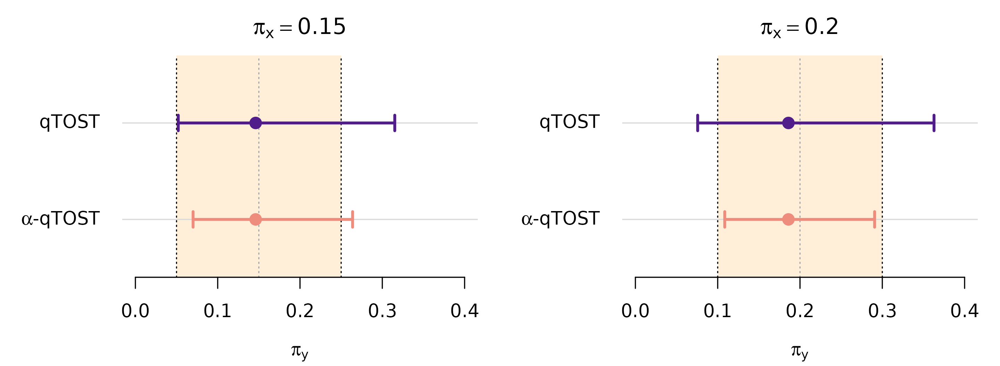
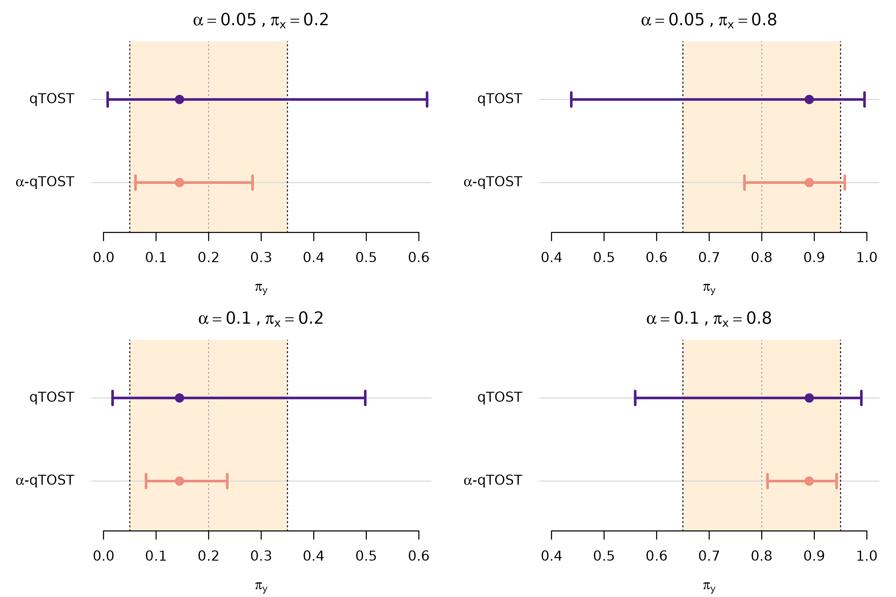

Quantiles Equivalence Testing (2026)
Source:vignettes/articles/reproducibility-quantile.Rmd
reproducibility-quantile.RmdThis document describes how to reproduce the simulations and case
studies in Wu, J., Guerrier, S., Gou, S., Kalia, Y. N., and Insolia, L.
(2026), Bridging the gap between experimental burden and statistical
power for quantiles equivalence testing. The methods are
implemented in the cTOST R package through
qtost() and compare_to_qtost(); see the Quantile Equivalence Testing
article for an introduction.
The reproducibility material is provided in reproducibility/quantile/,
and all paths below are relative to this path. The analyses used
cTOST version 1.1.0.
Simulation studies
The simulation studies were run on the University of Geneva’s HPC
infrastructure. Each study used 50,000 Monte Carlo replications, split
across 5,000 single-CPU array tasks, with 10 replications per task. The
submission scripts use Bash and Slurm. Before running them on another
cluster, adapt the module-loading commands, partition and resource
requests (see launch.sh and recomb.sh below).
Also ensure that cTOST and tictoc are
installed in the cluster’s R environment.
Single quantile
The single-quantile simulation study compares the rejection rates of
qTOST and
-qTOST
across reference quantiles, equivalence margins, sample sizes and
variance ratios. The source code is in
simulations/HPC/sim_univ/. Namely:
| File | Purpose |
|---|---|
sim_options.R |
Defines the statistical design and calibration controls. |
sim_HPC_main.R |
Runs assigned replications and saves test decisions. |
out_HPC_combine.R |
Validates results and computes rejection probabilities. |
setting.sh |
Sets study, replication/task counts and output paths. |
all.sh |
Submits the array and schedules aggregation on success. |
launch.sh |
Loads the cluster R environment and starts an array task. |
recomb.sh |
Runs the R aggregation script and then cleanup. |
clean.sh |
Removes chunks and logs after verifying aggregation. |
Simulation setting 1: size
Setting 1 evaluates rejection rates at the two equivalence boundaries, and , to compare the test size for the two procedures and reproduce Figure 3. The results can be reproduced as follows:
The inline sim_setting=1 selects the study without
editing setting.sh. The all.sh script submits
the aggregation job, recomb.sh, with a dependency on
successful completion of the simulation array. After aggregation
succeeds, clean.sh removes the temporary replication chunks
and individual task logs, while retaining the combined results. The
submission scripts refuse to reuse a nonempty output directory (so keep
previous outputs separately before rerunning the same setting).
Once the job is completed, the combined results are saved in:
simulations/HPC/sim_univ/sim_HPC_out/sim_setting_1/
results_sim_setting_size_1_n_simu_50000_n_array_5000.rdataThis file contains sol_TOST_avg and
sol_alphaTOST_avg, the estimated rejection probabilities
(expressed as percentages) for qTOST and
-qTOST,
respectively. Both are 4 x 3 x 4 x 2 x 2 arrays, indexed by
,
,
quantile/margin pair, variance ratio and equivalence boundary. For
example, inspect the results with:
load(paste0("simulations/HPC/sim_univ/sim_HPC_out/sim_setting_1/",
"results_sim_setting_size_1_n_simu_50000_n_array_5000.rdata"))
dim(sol_TOST_avg)
dimnames(sol_TOST_avg)
range(sol_alphaTOST_avg - sol_TOST_avg)The last command gives the range of differences in rejection rates,
in percentage points. The aggregation report,
report_recomb_HPC.Rout, is retained in the same
sim_setting_1/ output directory.
Then, to reproduce Figure 3, run:
source("simulations/fig_3_heatmap_diff_size.R")For each design and procedure, the figure displays the larger rejection percentage at the two simulated boundaries, with a Monte Carlo tolerance band around the nominal level of 5%.
By default, tikzPlot = 0 generates figures on the active
R graphics device. To regenerate the publication-style files, set
tikzPlot = 1 inside each plotting script before sourcing
it, and install tikzDevice plus a working LaTeX
distribution. Create the tex/ subfolder if needed, so that
each generated .tex file can then be compiled to PDF. For
instance:
install.packages("tikzDevice")
dir.create("tex", showWarnings = FALSE)Simulation setting 2: power and type-I error
Setting 2 uses the same job submission, aggregation and cleanup
workflow. It evaluates rejection probabilities over 50 equally spaced
values of
,
from
to
,
covering the equivalence region and nearby null values. In this case,
keep the same n_simu and n_array values and
change the Bash variable sim_setting:
After aggregation, the output file is:
simulations/HPC/sim_univ/sim_HPC_out/sim_setting_2/
results_sim_setting_2_n_simu_50000_n_array_5000.rdataIt contains the same two objects, sol_TOST_avg and
sol_alphaTOST_avg, with the same units and dimension order.
The last dimension now indexes 50 grid positions, giving
4 x 3 x 4 x 2 x 50 arrays. To reproduce the original
Figures 1–2 and S1–S6, run:
source("simulations/fig_1_heatmap_diff_pow.R") # Figures 1 and S1
source("simulations/fig_2_power_curves.R") # Figures 2 and S2-S6Figures 1 and S1 show the gain of -qTOST over qTOST in percentage points. Figures 2 and S2–S6 show the curves against , with the nominal level and equivalence limits as reference lines.
Multiple quantiles
The multiple-quantile simulation study compares the rejection rates
of qTOST and
-qTOST
when assessing two reference quantiles jointly. The source code is in
simulations/HPC/sim_mvt/. This follows the same workflow
and code structure as the single-quantile setup presented above.
Here, the two reference quantile levels
are assessed jointly, with margin
,
and the overall declaration of equivalence requires both quantile
assessments to be satisfied. Variance ratio
and nominal level
were considered in this study, which evaluates a
grid of transformed parameter
pairs
and
.
The design and calibration settings are defined in this directory’s
sim_options.R.
The variable sim_setting determines the sample size:
sim_setting |
Observations per group | Figure |
|---|---|---|
1 |
30 | 4 |
2 |
10 | S7 |
3 |
50 | S8 |
To reproduce the simulation results, run:
export n_simu=50000 n_array=5000
sim_setting=1 bash simulations/HPC/sim_mvt/all.sh
sim_setting=2 bash simulations/HPC/sim_mvt/all.sh
sim_setting=3 bash simulations/HPC/sim_mvt/all.shThe combined results are saved separately for each setting, namely:
simulations/HPC/sim_mvt/sim_HPC_out/sim_setting_1/
results_mvt_sim_setting_1_n_simu_50000_n_array_5000.rdata
simulations/HPC/sim_mvt/sim_HPC_out/sim_setting_2/
results_mvt_sim_setting_2_n_simu_50000_n_array_5000.rdata
simulations/HPC/sim_mvt/sim_HPC_out/sim_setting_3/
results_mvt_sim_setting_3_n_simu_50000_n_array_5000.rdataEach file contains sol_TOST_avg and
sol_piTOST_avg, the rejection probabilities for qTOST and
-qTOST,
respectively. These are 50 x 50 matrices, with rows
indexing the second transformed parameter and columns indexing the
first.
Once all three combined results are available, Figures 4, S7 and S8 can be obtained by running:
source("simulations/fig_4_pow_heatmap_mvt.R")Each figure displays the rejection probabilities of the two procedures across the parameter grid, their difference, and histograms of rejection rates on the equivalence-region boundary.
Case studies
The source code to reproduce the two case studies is provided in
case_study/. The full analyses were run locally using R
version 4.4.3, and took around 2 minutes in total on a standard
laptop.
Case study 1: A bridging clinical trial across gender populations
The first case study compares plasma trough concentrations of tipranavir between male and female patients using summary statistics from Table 5 of the FDA drug label. The reference group comprises 106 male patients, and the test group comprises 14 female patients.
Assuming lognormal concentrations, the log-scale means and standard
deviations were reconstructed by moment matching. The complete analysis
is in case_study/case_study_hiv.R. It evaluates 191
reference quantile levels from 0.11 to 0.30 in steps of 0.001, at
nominal level 0.05 and margin 0.10.
To reproduce the original analysis, run:
source("case_study/case_study_hiv.R") # Figures 5 and 6The results are stored in the 191 x 3 matrices
res and res_star for qTOST and
-qTOST,
respectively. Rows index reference quantile levels, and columns give the
lower interval endpoint, estimated probability and upper endpoint.
Figure 5 displays the results at two (separately assessed) quantile
reference levels
and
.
Figure 6 shows intervals across a larger range. Also in this case, set
tikzPlot = 1 inside the script to write
tex/fig5.tex and tex/fig6.tex, then compile
them as described above.
As an illustration, Figure 5 can be reproduced as follows.
First load and transform the data:
# Original-scale means, standard deviations and sample sizes
mu_x = 35.6
sd_x = 16.7
n_x = 106
mu_y = 41.6
sd_y = 24.3
n_y = 14
# Log-scale summaries
x = list(mean = log(mu_x^2 / sqrt(mu_x^2 + sd_x^2)),
sd = sqrt(log(1 + sd_x^2 / mu_x^2)), n = n_x)
y = list(mean = log(mu_y^2 / sqrt(mu_y^2 + sd_y^2)),
sd = sqrt(log(1 + sd_y^2 / mu_y^2)), n = n_y)Then specify the designs and obtain the qTOST and the -qTOST assessments:
library(cTOST)
pi_x = c(0.15, 0.20)
alpha = 0.05
delta = 0.10
hiv_qtost = lapply(pi_x, function(p) {
qtost(x, y, pi_x = p, delta = delta, alpha = alpha,
method = "unadjusted")
})
hiv_alpha_qtost = lapply(pi_x, function(p) {
qtost(x, y, pi_x = p, delta = delta, alpha = alpha,
method = "alpha", B = 100000, seed = 12345,
tol = .Machine$double.eps)
})The results at each reference quantile can also be compared directly:
compare_to_qtost(hiv_alpha_qtost[[1]]) # 15th percentile
#> qTOST: ✖ Can't accept quantile (bio)equivalence
#> alpha-qTOST: ✖ Can't accept quantile (bio)equivalence
#>
#> Equiv. Region: |------------------------|
#> qTOST: (--------------x------------------)
#> alpha-qTOST: (------------x------------)
#>
#> CI - low CI - high
#> qTOST: 0.05208 0.31514
#> alpha-qTOST: 0.07011 0.26390
#>
#> Equiv. lim. = dw/up 0.05000 0.25000
compare_to_qtost(hiv_alpha_qtost[[2]]) # 20th percentile
#> qTOST: ✖ Can't accept quantile (bio)equivalence
#> alpha-qTOST: ✔ Accept quantile (bio)equivalence
#>
#> Equiv. Region: |---------------------|
#> qTOST: (--------------x------------------)
#> alpha-qTOST: (-----------x----------)
#>
#> CI - low CI - high
#> qTOST: 0.07568 0.36283
#> alpha-qTOST: 0.10857 0.29065
#>
#> Equiv. lim. = dw/up 0.10000 0.30000Finally, display the confidence intervals and equivalence margins:
plot_intervals = function(qtost_fit, alpha_qtost_fit, pi_x, delta,
k = 1, xlim, main) {
ci = rbind(qtost_fit$ci[k, ], alpha_qtost_fit$ci[k, ])
estimate = c(qtost_fit$pi_y_hat[k], alpha_qtost_fit$pi_y_hat[k])
cols = c("#501d8a", "#ee8c7d")
ypos = c(2, 1)
plot(NA, xlim = xlim, ylim = c(0.4, 2.7), axes = FALSE,
xlab = expression(pi[y]), ylab = "", main = main)
rect(pi_x - delta, 0.4, pi_x + delta, 2.7,
col = adjustcolor("#FF9900", alpha.f = 0.15), border = NA)
abline(h = ypos, col = "grey85")
abline(v = pi_x, col = "grey65", lty = 3)
abline(v = pi_x + c(-delta, delta), lty = 3)
arrows(ci[, 1], ypos, ci[, 2], ypos, angle = 90, code = 3,
length = 0.07, col = cols, lwd = 2.5)
points(estimate, ypos, pch = 16, col = cols, cex = 1.5)
axis(1)
axis(2, at = ypos, labels = expression("qTOST", alpha*"-qTOST"),
las = 1, tick = FALSE)
}
old_par = par(mfrow = c(1, 2), mar = c(4, 5.5, 2.5, 1), yaxs = "i")
for (i in seq_along(pi_x)) {
plot_intervals(hiv_qtost[[i]], hiv_alpha_qtost[[i]],
pi_x = pi_x[i], delta = delta, xlim = c(0, 0.4),
main = bquote(pi[x] == .(pi_x[i])))
}
par(old_par)
While neither procedure establishes equivalence at the 15th percentile, the -qTOST interval is entirely inside the equivalence margins and establishes equivalence at the 20th percentile when the qTOST fails to do so.
Case study 2: Demonstrating inter-operator reproducibility
The second case study compares the cutaneous delivery of a compound
measured by two operators using the same experimental protocol. The
biodistribution dataset contains six independent
observations per operator. Its X and Y columns
are already on the logarithmic scale and represent the reference and
test operators, respectively.
The complete analysis is in
case_study/case_study_lad_mvt.R, which jointly tests the
20th and 80th reference percentiles over 20 nominal significance levels
from 0.01 to 0.20, with margin 0.15. This follows the same workflow as
the one described for the first case study. To reproduce the complete
analysis, run:
source("case_study/case_study_lad_mvt.R") # Figures 7 and 8The results are stored in sol_qtost and
sol_alpha_qtost, each a 2 x 3 x 20 array
indexed by reference quantile, lower endpoint/estimate/upper endpoint,
and nominal level. Figure 7 displays the significance levels 0.05 and
0.10. Figure 8 shows intervals across a larger range.
As an illustration, Figure 7 can be reproduced as follows.
First load the data:
Then jointly assess the two reference quantiles at nominal significance levels 0.05 and 0.10. The designs and the qTOST and the -qTOST assessments can be obtained as follows:
pi_x = c(0.2, 0.8)
delta = 0.15
alphas = c(0.05, 0.1)
lad_qtost = lapply(alphas, function(a) {
qtost(x, y, pi_x = pi_x, delta = delta, alpha = a,
method = "unadjusted")
})
lad_alpha_qtost = lapply(alphas, function(a) {
qtost(x, y, pi_x = pi_x, delta = delta, alpha = a,
method = "alpha", B = 10000, seed = 12345,
tol = sqrt(.Machine$double.eps), max_iter = 5,
tolpower = 1e-3, MC_sup = TRUE)
})Finally, display the confidence intervals and equivalence margins, with reference quantiles in columns and nominal levels in rows:
plot_intervals = function(qtost_fit, alpha_qtost_fit, pi_x, delta,
k = 1, xlim, main) {
ci = rbind(qtost_fit$ci[k, ], alpha_qtost_fit$ci[k, ])
estimate = c(qtost_fit$pi_y_hat[k], alpha_qtost_fit$pi_y_hat[k])
cols = c("#501d8a", "#ee8c7d")
ypos = c(2, 1)
plot(NA, xlim = xlim, ylim = c(0.4, 2.7), axes = FALSE,
xlab = expression(pi[y]), ylab = "", main = main)
rect(pi_x - delta, 0.4, pi_x + delta, 2.7,
col = adjustcolor("#FF9900", alpha.f = 0.15), border = NA)
abline(h = ypos, col = "grey85")
abline(v = pi_x, col = "grey65", lty = 3)
abline(v = pi_x + c(-delta, delta), lty = 3)
arrows(ci[, 1], ypos, ci[, 2], ypos, angle = 90, code = 3,
length = 0.07, col = cols, lwd = 2.5)
points(estimate, ypos, pch = 16, col = cols, cex = 1.5)
axis(1)
axis(2, at = ypos, labels = expression("qTOST", alpha*"-qTOST"),
las = 1, tick = FALSE)
}
old_par = par(mfrow = c(2, 2), mar = c(4, 5.5, 2.5, 1), yaxs = "i")
for (i in seq_along(alphas)) {
for (k in seq_along(pi_x)) {
plot_intervals(lad_qtost[[i]], lad_alpha_qtost[[i]],
pi_x = pi_x[k], delta = delta, k = k,
xlim = if (k == 1) c(0, 0.6) else c(0.4, 1),
main = bquote(alpha == .(alphas[i]) ~ "," ~
pi[x] == .(pi_x[k])))
}
}
par(old_par)
Equivalence is established only when, at a given significance level, both intervals lie within their respective equivalence margins. Thus, neither procedure establishes joint equivalence at the 5% nominal level. At 10%, -qTOST establishes joint equivalence, whereas qTOST does not.
References
Wu, J., Guerrier, S., Gou, S., Kalia, Y. N., and Insolia, L. (2025). Bridging the gap between experimental burden and statistical power for quantiles equivalence testing. arXiv:2510.17514.